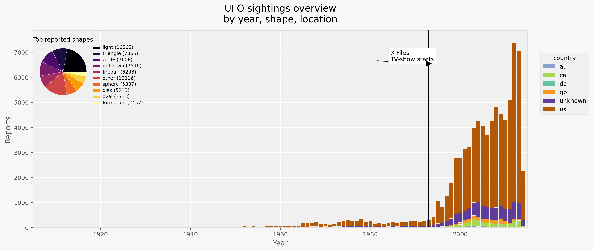

A map of mystery
At first glance, this looks like a map of UFO activity.
But every point is also a person deciding that something was strange enough to report. The data is shaped by population, culture, language, internet access, memory, and geocoding. That is why the story is strongest when we treat UFO sightings as a reporting system.
Data reality check
This is report data, not alien data.
Maven describes this dataset as sightings between 1949 and 2014, but the raw archived file contains earlier reports back to 1906. That mismatch is useful: it reminds us that this is a messy historical record, not a perfect measurement instrument.
The United States is also not a neutral baseline here. The source pipeline is associated with NUFORC, an English-language, US-centered reporting culture. The map therefore says as much about who reports as it says about what people think they saw.
Top reported shapes
Time changed everything
The sky gets louder in the internet era.
Reports rise sharply in the 1990s and 2000s. That pattern is consistent with easier online reporting and growing visibility of UFO reporting systems, but the chart alone cannot prove what caused the rise.
This is the key interpretive move: after the web made reporting easier, the archive becomes much denser. A louder archive is not automatically a stranger sky.
Reports by year
Annotated timeline
Reports by year with cultural marker
The vertical line marks the 1985 premiere of "The X-Files", a cultural moment that coincides with rising online reporting. This annotation highlights how social and media change can align with reporting patterns.
Annual reports (annotated)

Human rhythms
Sightings cluster when people are likely to be looking.
The month and hour pattern points toward observation opportunity: evening hours, darkness, warm weather, and social activity all affect what gets noticed and reported.
Reports by month and hour
USA reporting machine
The United States dominates, but not because it owns the sky.
About 81% of clean reports are coded as US reports. That is a conclusion about infrastructure: NUFORC visibility, English-language access, population, media culture, and a familiar habit of submitting odd observations to a public archive.
Raw counts mostly reward large states. A simple population-normalized view changes the ranking: Washington, Oregon, Montana, Alaska, Maine, Vermont, Arizona, and New Mexico become much more visible once the denominator is added.
US states: raw reports vs reports per million people
Cities and Area 51
The local hotspots are mostly cities, not secret desert mythology.
City rankings pull the map closer to the ground. Seattle, Phoenix, Las Vegas, Los Angeles, San Diego, Portland, Houston, and Chicago are among the largest city-level report clusters.
Area 51 is a great cultural symbol, but it is not a huge count in this dataset. The nearby Area 51 bounding region has only about 20 reports, while Las Vegas alone has 363.
Top US city hotspots
Duration and shape
Some shapes last longer in the story people tell.
Duration is noisy because reports use human estimates, but the pattern is still useful. Among common shapes, changing objects have the longest median duration, while flashes and chevrons tend to be short.
That suggests the shape label partly captures observation time: fast events become flashes, while longer uncertain events are easier to describe as changing, lights, disks, or unknowns.
Median duration by common shape
Before and after the web
The internet era changes both volume and vocabulary.
Before 1995, reports have a median duration around 300 seconds and disk is the leading shape. From 1995 to 2014, the median drops to about 180 seconds and light becomes the dominant label.
This does not prove that sightings physically changed. It shows that the reporting environment changed: more people, faster submissions, and more short observations entering the archive.
Era comparison
Language reveals the ordinary inside the strange
People most often describe lights, motion, color, and formations.
The comment field is too messy for grand claims, but frequent words show the vocabulary of observation. Reports are stories told under uncertainty.
Common words in comments
Do hotspots persist?
A burst is different from a place that keeps reappearing.
The map groups reports into approximate hex bins. Use the decade slider to see where reports concentrate over time, or switch to persistence to highlight places that appear across many different years.
The global view is kept as perspective, but the main lesson remains the same: dense reporting often follows people, infrastructure, language, and repeatable reporting pathways.
What are we really seeing?
The data does not answer whether UFOs are real.
It answers something more measurable: UFO reports are patterned by time, place, language, visibility, population, and reporting infrastructure. The mystery is partly in the sky, but partly in the reporting system.
Global perspective
Canada, the UK, Australia, Germany, and unknown-country records are present, but the archive is overwhelmingly American. The gentlest punchline is that Americans may not be uniquely good at spotting aliens; they are extremely good at seeing something weird and finding a form to submit.